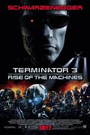
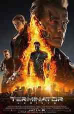

|
1.
The Terminator
(1984)
1hr 47min | Sci-Fi, Action
 8/10
 84
Official Trailer
|
The indestructible cyborg-assassin known as the "Terminator" sent back from a dystopian 2029 to 1984, where the cold machines have conquered the entire world and commences his deadly mission to kill humankind's most important woman: the unsuspecting, Sarah Connor. However, from the same war-torn post-apocalyptic future comes a battle-scarred defender--Kyle Reese, a brave soldier of the human Resistance Army--bent on stopping the cybernetic killer from eliminating the world's last hope. But, the Terminator has no feelings, he doesn't sleep, and above all, he won't stop until he carries out his grim task. Does our future lie in our past? |
Arnold Schwarzenegger
Linda Hamilton
Michael Biehn |
James Cameron |
 |
2.
Terminator 2: Judgment Day
(1991)
2hr 17min | Action, Sci-Fi
8.5/10
75
Official Trailer
|
Over 10 years have passed since the first machine called The Terminator tried to kill Sarah Connor and her unborn son, John. The man who will become the future leader of the human resistance against the Machines is now a healthy young boy. However, another Terminator, called the T-1000, is sent back through time by the supercomputer Skynet. This new Terminator is more advanced and more powerful than its predecessor and its mission is to kill John Connor when he's still a child. However, in the Internet and John do not have to face the threat of the T-1000 alone. Another Terminator (identical to the same model that tried and failed to kill Sarah Connor in 1984) is also sent back through time to protect them. Now, the battle for tomorrow has begun. |
Arnold Schwarzenegger
Linda Hamilton
Edward Furlong |
|  |
3.
Terminator 3: Rise of the Machines
(2003)
1hr 49min | Action, Sci-Fi
6.3/10
66
Official Trailer
|
More than 10 years after 'Terminator 2', John Connor now exists only as a drifter - living 'off the grid', so no more Terminators from the future can hunt him down. Unfortunately, SkyNet does send another one back - and this one is called the T-X, even more powerful & advanced than the dreaded T-1000. However, another CSM-101 Terminator is also sent back to protect John against the T-X. Now, Skynet is patiently assuming control of civilian computer systems, under the guise of a computer virus. John has also met his future wife, Kate Brewster, whose father - a U.S. Air Force General - is in charge of the military computer systems & is leery of up linking SkyNet. However, when the SkyNet virus infects the U.S military computers & leaves the country open to attack, the machines begin their horrific takeover. Soon a nuclear war will result - and the war against the machines will begin. Can the outdated CSM-101 Terminator eliminate the highly advanced T-X - or will a darker future await. |
Arnold Schwarzenegger
Nick Stahl
Kristanna Loken |
Jonathan Mostow |
|
4.
Terminator Salvation
(2009)
1hr 55min | Action, Adventure, Sci-Fi
6.5/10
49
Official Trailer
|
In 2003, in the Longview State Correctional Facility, the criminal Marcus Wright is on death row, and is convinced by the cancerous Dr. Serena Kogan to donate his body to her research and he accepts. In 2018, after an unsuccessful attack to a Skynet facility, only John Connor survives, but he discovers that Skynet is developing the powerful new model T-800. Out of the blue, Marcus appears naked and with amnesia in the location. Marcus befriends the teenager Kyle Reese and the girl Star who help him to survive the lethal machines and they travel together in a Jeep. Meanwhile the resistance discovers a signal that might turn-off the machines and John offers to test it. When Kyle is captured by a machine and brought to the Skynet headquarters, Marcus decides to help the youngster and heads to Skynet; on the way, he saves Blair Williams who suggests to him that he should meet John Connor first. But Marcus steps on a mine and is submitted to surgery, when a secret about his origins is disclosed. |
Christian Bale
Sam Worthington
Anton Yelchin |
McG |
|  |
5.
Terminator Genisys
(2015)
2hr 12min | Action, Adventure, Sci-Fi
6.3/10
38
Official Trailer
|
When John Connor, leader of the human resistance, sends Sgt. Kyle Reese back to 1984 to protect Sarah Connor and safeguard the future, an unexpected turn of events creates a fractured time-line. Now, Sgt. Reese finds himself in a new and unfamiliar version of the past, where he is faced with unlikely allies, including the Guardian, dangerous new enemies, and an unexpected new mission: To reset the future. |
Arnold Schwarzenegger
Jason Clarke
Emilia Clarke |
Alan Taylor |
|
6.
Terminator: Dark Fate
(2019)
2hr 8min | Sci-Fi, Action, Adventure
6.2/10
54
Official Trailer
|
A young female Mexican worker, Dani Ramos, is hunted down by a virtually indestructible terminator from the future called a REV-9. However, she is protected by an enhanced human named Grace who is also from the future. They flee from the unstoppable terminator and out of the blue Sarah Connor helps them on the road. All three head to Laredo, Texas, where Grace has the coordinates of a possible support and where they meet a T-800 who is living in an isolated location with his family. The group teams up to try to destroy the REV-9. |
Arnold Schwarzenegger
Linda Hamilton
Gabriel Luna
Mackenzie Davis |
Tim Miller |